Termoli is a place where ancient traditions and contemporary culture blend seamlessly, creating a truly unique identity. The town and its customs reflect a deep connection to the sea, a rich historical past and a strong sense of community.
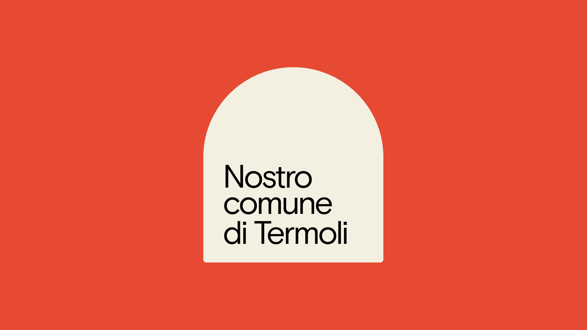
The project was developed as a submission for the “Rebranding Termoli” international competition, launched by TerraViva Competitions in collaboration with Fondazione MACTE and the Municipality of Termoli. The initiative invited designers, architects, and creatives from around the world to propose a new urban brand identity for Termoli — a coastal town in southern Italy with deep cultural roots and a strong connection to the Adriatic Sea.
Every shape, at every corner.
To design an identity that truly belongs to Termoli, we began by walking its streets, observing its details, and mapping its textures. Every stone, curve, arch, doorway, tower, and coastline carries the memory of a layered history and a living community.
These visual elements shaped the foundation of the new brand. Each corner revealed a shape, and each shape told a story — not of a past frozen in time, but of a city constantly redefining itself.
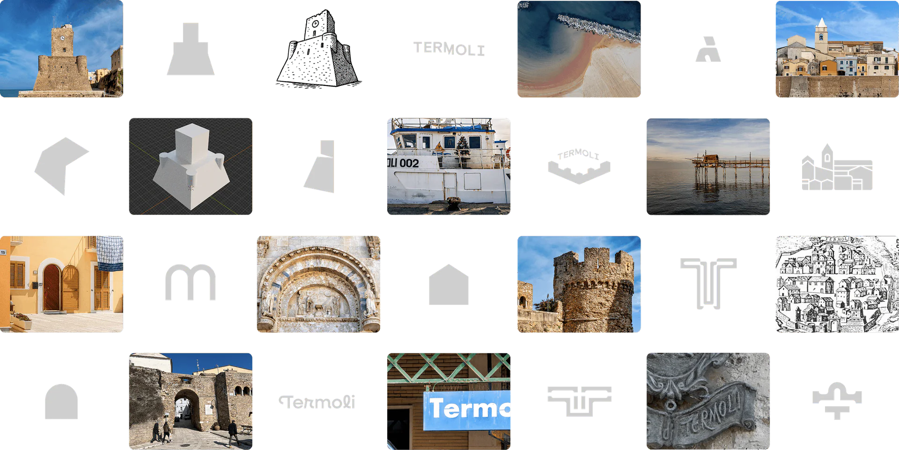
Bright & Brave
Termoli doesn’t whisper, it shines. The brand speaks clearly and without filters. Just like the city, it embraces bold shapes and vibrant colors that make it impossible to ignore.
Warmly Welcoming
In Termoli, belonging isn’t earned, it’s offered. The tone is open, inclusive, and human. It invites locals to feel proud, and newcomers to feel at home, no matter where they come from.
Simple by Nature
There’s honesty in Termoli’s streets. The brand reflects that: stripped of excess, straightforward, and beautifully readable — like a door left open.
Timeless Contrast
Modern lines meet ancient stone. The voice of the brand blends past and future, tradition and experimentation. It’s the old soul of Termoli, speaking in today’s language.
Made to Move
From hand-painted signs to market stalls and fishing boats — nothing here stands still. The brand is built to travel: replicable, and alive in every context, from walls to words.
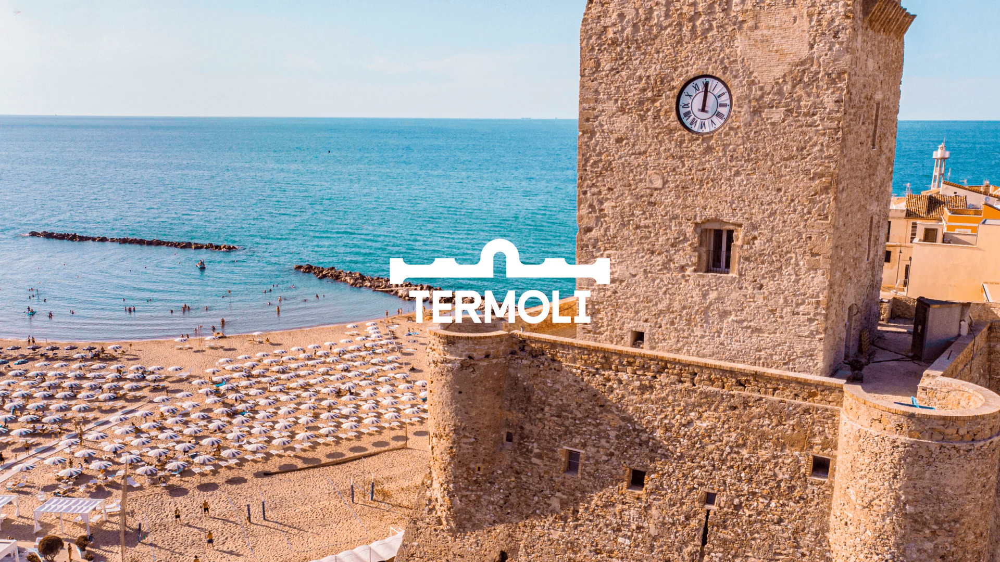
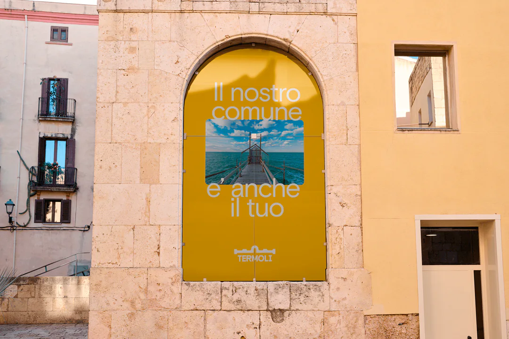
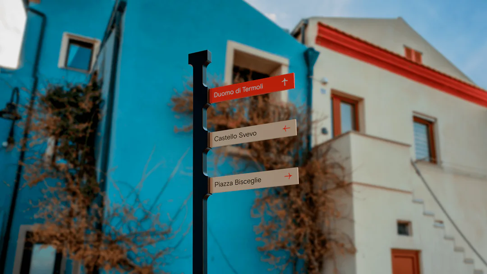
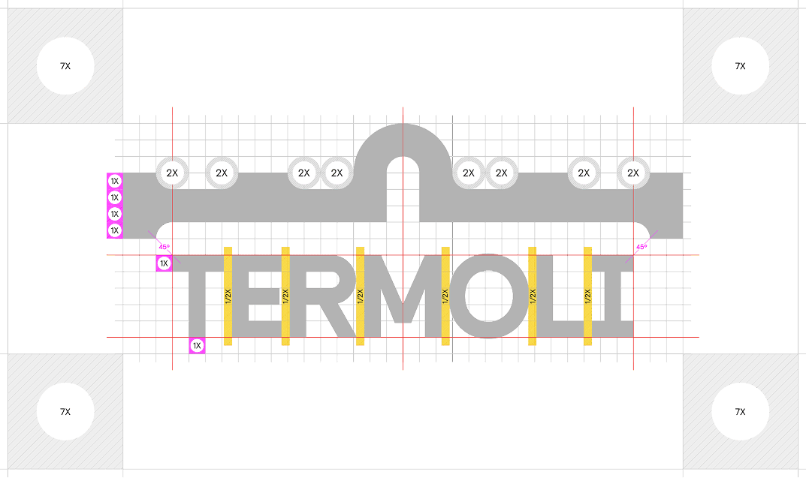
The main logo is a synthesis of the city’s unique architectural language — inspired by its arches, facciate, and coastal skyline. It captures the harmony of shapes found across Termoli’s streets: geometric yet organic, historic yet alive.
Rather than replicating a single landmark, the mark abstracts the city’s visual rhythm into a form that’s bold, memorable, and welcoming. It reflects a place that is rooted in tradition but open to reinvention — a modern emblem for a timeless community.
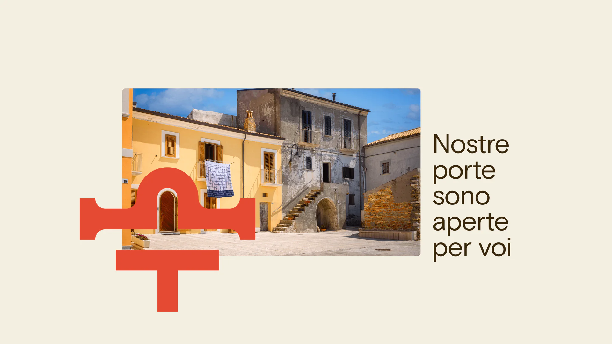
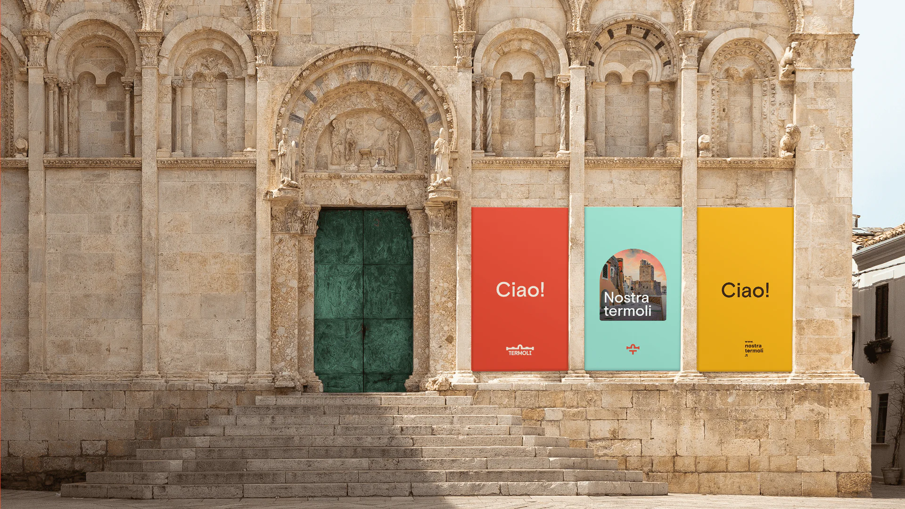
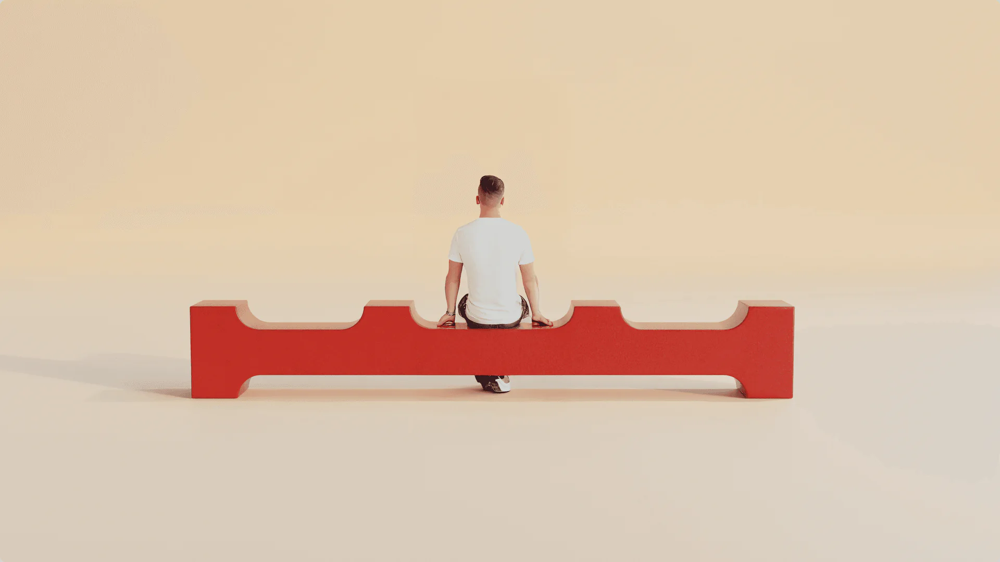
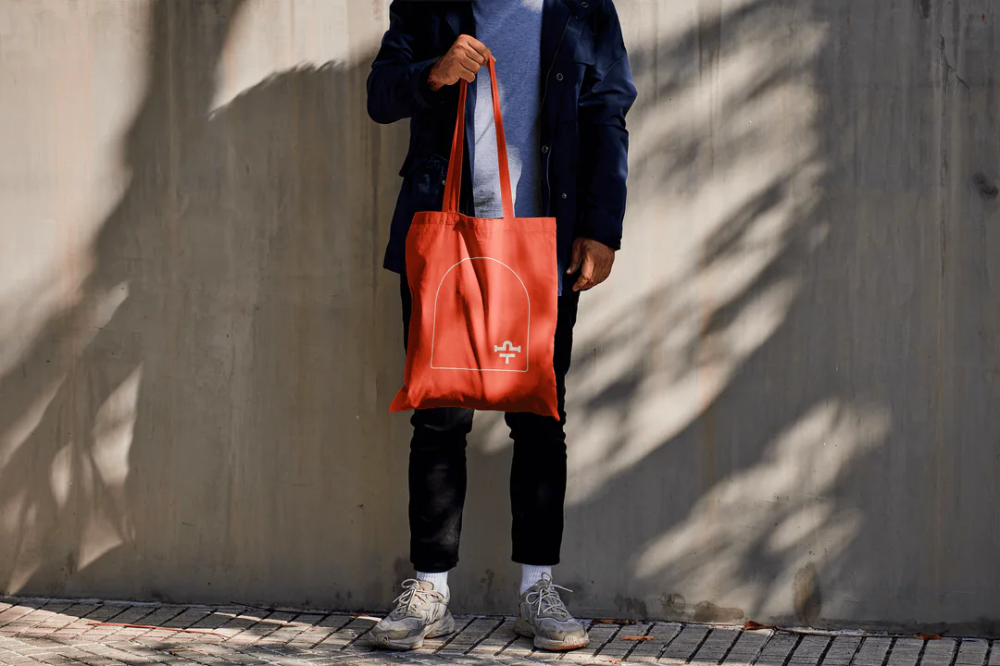
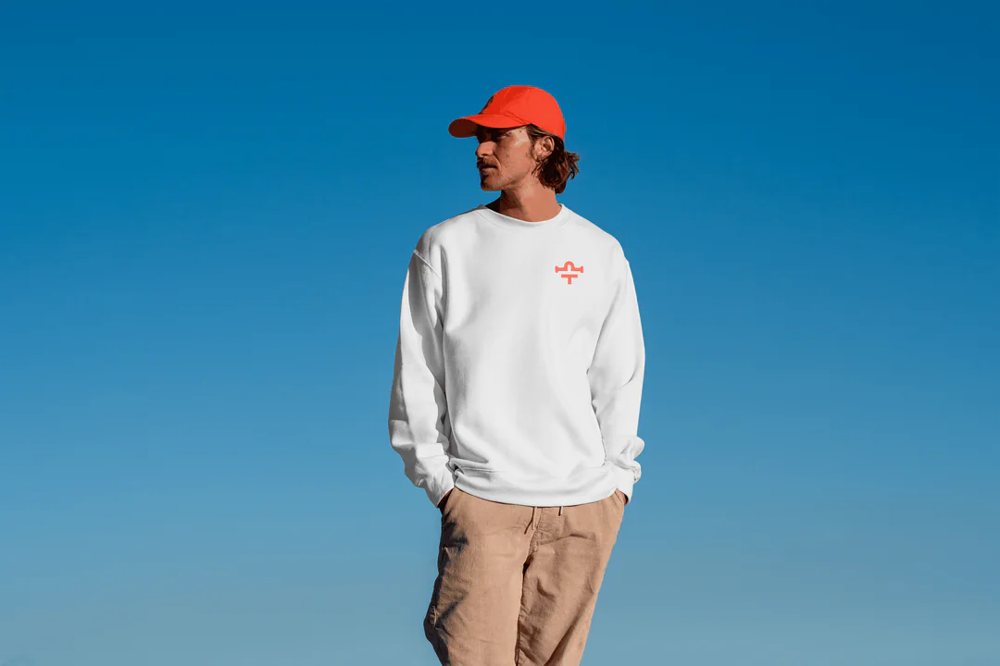
Nostro
comune
di Termoli
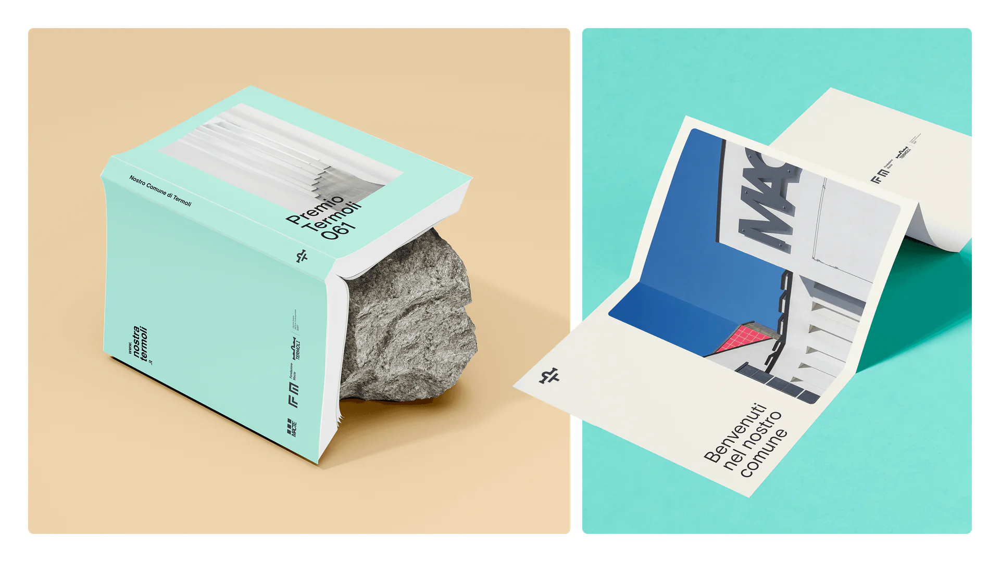
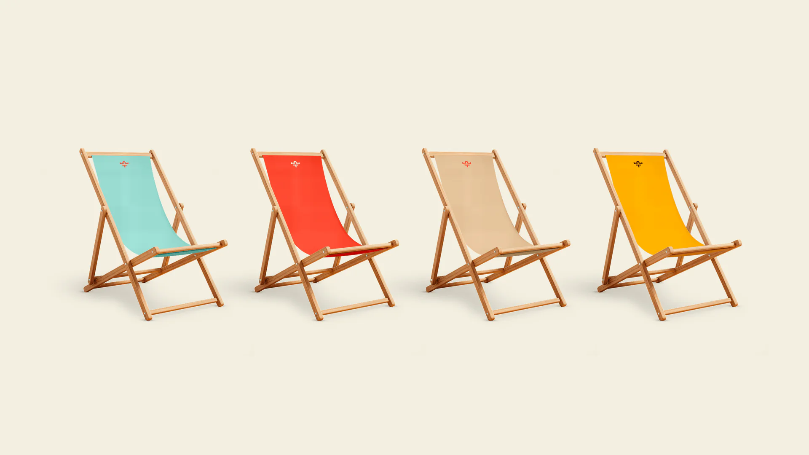
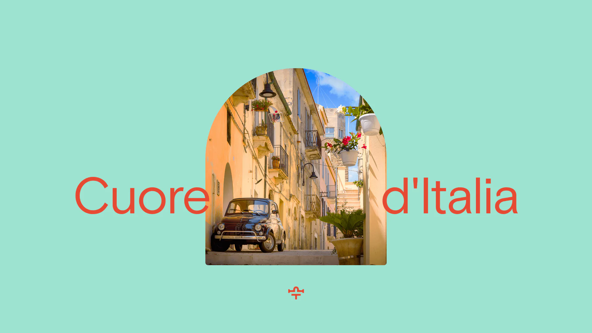